Cadrul legal al profesiei de asistent medical, drepturile pacientului și practica bazată pe dovezi
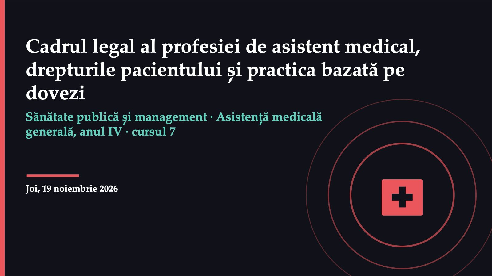
1 / 44Bună ziua. Cursul de azi are două ore. În prima vedem ce spune legea despre profesia voastră și despre drepturile pacientului, pe situații obișnuite în stagiu. În a doua verificăm, pe rezumatul unei sinteze Cochrane, dacă o practică pe care ați văzut-o în stagiu rămâne sau se schimbă.
?
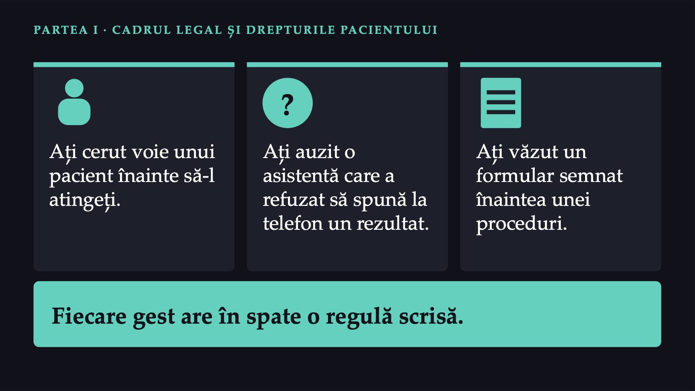
2 / 44În stagiu ați întâlnit legea fără să o numiți. Fiecare dintre aceste gesturi are în spate o regulă scrisă, care spune cine decide asupra corpului și a datelor pacientului, cine răspunde când ceva merge prost și ce poate face asistentul medical fără să depășească limitele profesiei. Cursul nu vă transformă în juriști: vă arată în ce text să căutați și ce întrebare să puneți când aveți o îndoială.
?
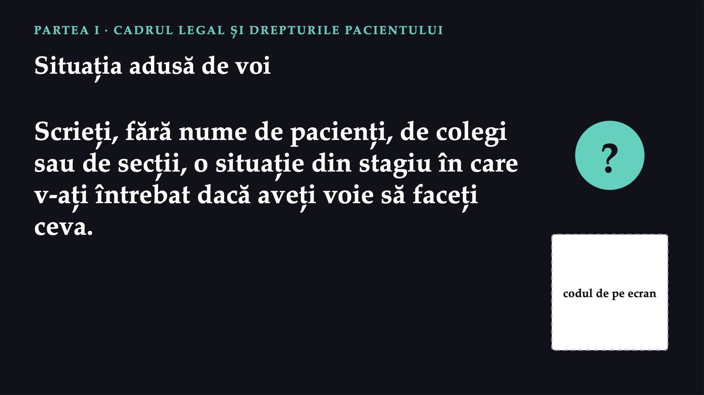
3 / 44În pregătire v-am rugat să notați o situație din stagiu în care v-ați întrebat dacă aveți voie: să intrați la un pacient, să răspundeți unei rude, să fotografiați ceva pentru portofoliu. Scrieți-o acum, pe scurt și anonim. Ne întoarcem la câteva dintre ele după primele trei situații.
Cum lucrăm azi
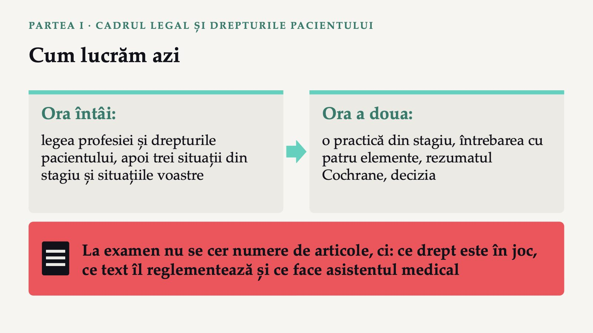
4 / 44În prima oră se prezintă cadrul legal al profesiei și drepturile pacientului, apoi lucrăm pe trei situații obișnuite în stagiu, la care se adaugă ale voastre. A doua oră pornește de la o practică pe care ați văzut-o în stagiu și verifică ce spune dovada despre ea. Numerele de articole vă ajută să găsiți textul legii; nu se învață pe de rost. La examen recunoașteți, într-o situație din stagiu, dreptul în joc, actul care îl reglementează și ce face, concret, asistentul medical.
Cum este așezat cadrul legal
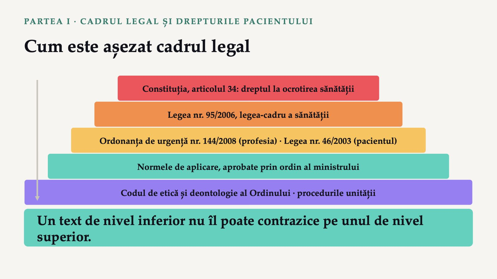
5 / 44Constituția prevede că exercitarea profesiilor medicale se controlează potrivit legii; de aceea profesia voastră este reglementată prin lege și controlată de stat. Legea nr. 95/2006 are titluri pentru sănătatea publică, spitale, asigurări, profesia de medic, infracțiuni și răspunderea civilă a personalului medical; profesia de asistent medical nu are un titlu propriu în ea. Profesia are actul ei, ordonanța de urgență nr. 144/2008, iar drepturile pacientului sunt în Legea nr. 46/2003. Normele de aplicare spun ce formular se completează și cine semnează. Codul de etică este obligatoriu pentru membrii Ordinului. Când o procedură a secției pare să contrazică legea, întrebarea corectă nu este „ce fac colegii”, ci „ce spune textul de deasupra”.
Ordonanța profesiei: cine are dreptul să lucreze
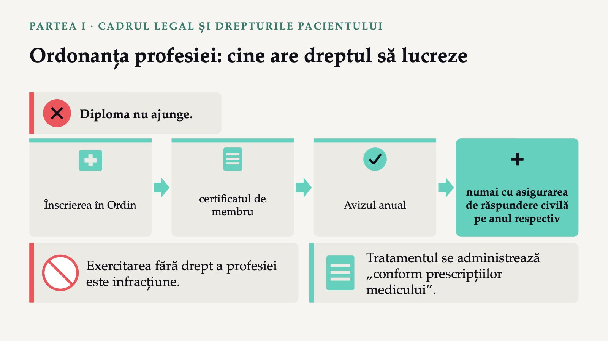
6 / 44Asistentul medical exercită profesia pe baza certificatului de membru și a avizului anual, iar avizul se acordă numai după încheierea asigurării de răspundere civilă pentru anul respectiv: fără asigurare nu există aviz, fără aviz nu există drept de practică. Asistentul medical are o competență proprie în evaluarea nevoilor de îngrijire, în îngrijiri și în educația pentru sănătate, dar tratamentul medicamentos îl administrează pe baza prescripției. Când o rudă cere „ceva pentru durere”, răspunsul ține de această delimitare. La înscriere depuneți un jurământ care cuprinde angajamentul de a păstra secretul profesional, iar educația continuă este o obligație, pentru o prestație „sigură și eficace”.
Secretul profesional, după Codul de etică
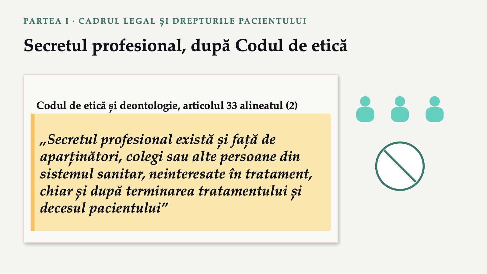
7 / 44Alineatul acesta merită citit de două ori. Secretul nu privește doar străinii, ci și familia și colegii care nu au legătură cu tratamentul. O asistentă din altă secție care întreabă ce are vecinul ei internat la voi nu are dreptul să afle, chiar dacă este colegă. Divulgarea atrage răspunderea disciplinară, cu excepția consimțământului expres al pacientului sau a situațiilor în care legea obligă la comunicare. Codul nu lasă loc unei aprecieri personale de tipul „e spre binele lui să afle familia”.
Legea drepturilor pacientului nr. 46/2003
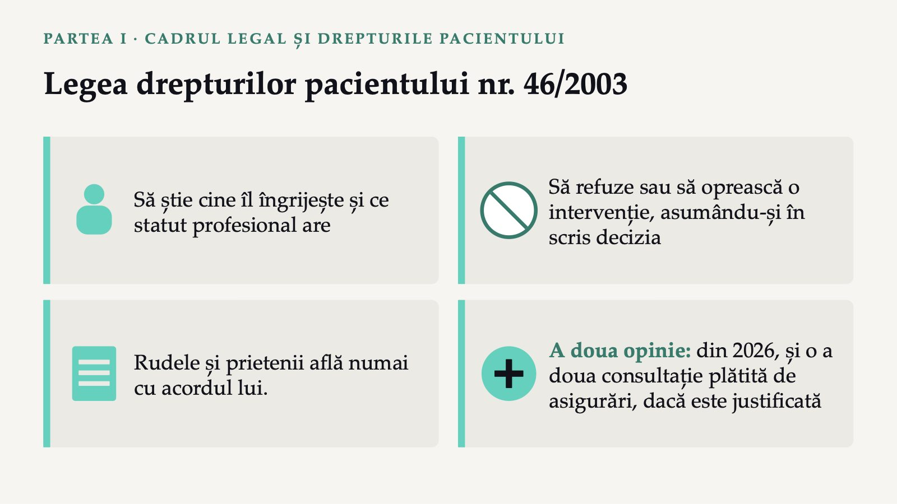
8 / 44Legea este scurtă și se citește ușor. Unele materiale vorbesc despre „opt categorii de drepturi”; gruparea este didactică, legea nu numără categoriile. Pentru voi, dreptul pacientului de a ști statutul profesional al celui care îl îngrijește are o consecință directă: pacientul are dreptul să știe că sunteți student, nu asistent medical cu drept de practică. Calitatea de rudă nu dă, singură, dreptul la informație; cuvântul care decide este „acordul”. Atenție la o confuzie frecventă: semnătura de la internare nu acoperă orice procedură ulterioară și nici participarea studenților.
Formularul „Acordul pacientului informat”
![PARTEA I · CADRUL LEGAL ȘI DREPTURILE PACIENTULUI Formularul „Acordul pacientului informat” ACORDUL PACIENTULUI INFORMAT 1. Datele pacientului Numele și prenumele: .......... 3. Actul medical (descriere) .......... 4. Au fost furnizate pacientului următoarele informații în legătură cu actul medical: Da Nu Date despre starea de sănătate Diagnostic Prognostic Natura și scopul actului medical propus Intervențiile și strategia terapeutică propuse Riscurile neefectuării tratamentului Informații despre identitatea și statutul profesional al personalului care îl va trata*) Pacientul a fost încunoștințat că are dreptul la o a doua opinie medicală. Subsemnatul, .........(numele și prenumele pacientului/reprezentantului legal)........, declar că am înțeles toate informațiile furnizate de către .........(numele și prenumele medicului/asistentului medical)........... și enumerate mai sus, că am prezentat medicului/asistentului medical doar informații adevărate și îmi exprim acordul informat pentru efectuarea actului medical. X ........... Data: ...../...../........ Ora: .......... Tabel cu personalul medical care îngrijește pacientul Nr. crt. Numele și prenumele Statutul profesional Anexa nr. 1 la normele aprobate prin Ordinul nr. 482/2007 ? Găsiți pe formular: cine informează pacientul și unde stă tabelul personalului. Informațiile se bifează „da” sau „nu”; tabelul arată cine îngrijește pacientul.](diapozitive/C07/009.jpg) 9 / 44
9 / 44Legea nr. 95/2006 îl numește pe asistentul medical alături de medic: în obținerea acordului scris, amândoi sunt datori să prezinte pacientului informații pe măsura puterii lui de înțelegere. Formularul are rubrici pentru diagnostic, prognostic, natura și scopul actului, beneficii, riscuri, alternative și riscurile neefectuării, pentru identitatea și statutul profesional al personalului și pentru dreptul la a doua opinie. La sfârșit are tabelul cu personalul care îngrijește pacientul. Un student nu este trecut acolo ca asistent medical.
Consimțământul valabil
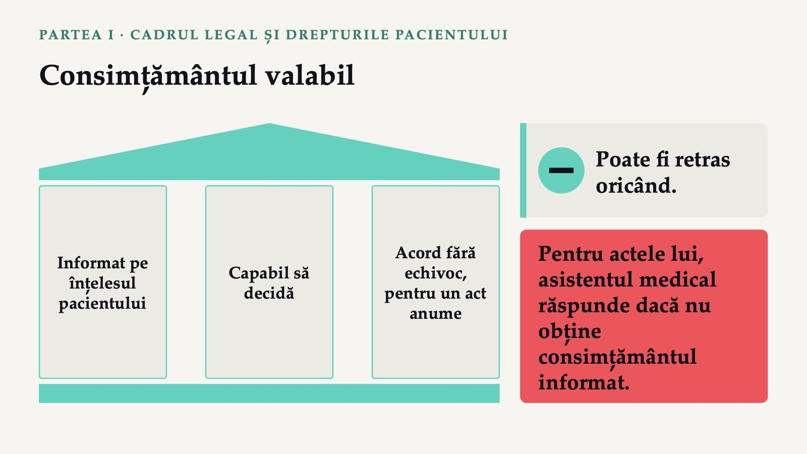
10 / 44Informarea pe înțelesul pacientului înseamnă cuvinte obișnuite în locul termenilor medicali, o singură informație importantă pe rând și verificarea înțelegerii: pacientul spune cu propriile cuvinte ce urmează să i se facă. Un pacient care dă din cap nu a înțeles neapărat. Dacă actul este al vostru, reluați informarea; dacă este decis de medic, îi spuneți medicului ce ați observat și notați. Pentru minor sau pentru adultul fără discernământ, acordul îl dă reprezentantul legal sau ruda cea mai apropiată. Retragerea acordului este un drept: o transmiteți medicului fără întârziere și vă asigurați că refuzul este consemnat.
Pacientul care nu vrea studenți
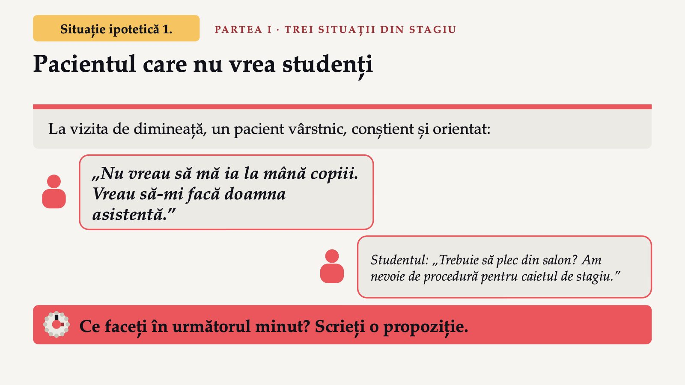
11 / 44Situația este ipotetică, una dintre situațiile standard ale stagiului. Sunteți la vizita de dimineață, împreună cu asistenta de salon și cu doi colegi de an. Studentul mai întreabă dacă poate face procedura măcar sub supraveghere, dacă îi explică pacientului că este aproape absolvent. Scrieți ce faceți, nu ce spune legea.
pe ce se rezolvă
![Situație ipotetică 1: pe ce se rezolvă PARTEA I · TREI SITUAȚII DIN STAGIU Legea nr. 46/2003, articolul 19: „Consimțământul pacientului este obligatoriu în cazul participării sale în învățământul medical clinic și la cercetarea științifică.” Formularul „Acordul pacientului/reprezentantului legal privind participarea la învățământul medical”, anexa nr. 2 la normele aprobate prin Ordinul nr. 1 410/2016 Acordul pacientului/reprezentantului legal privind participarea la învățământul medical Subsemnatul, ..../(numele și prenumele pacientului)......, cod numeric personal ................, îmi exprim acordul de a participa la învățământul medical și pentru ca informațiile de specialitate despre starea mea de sănătate să fie folosite în procesul de învățământ, aceasta fiind dorința mea, pe care mi-o exprim în deplină cunoștință de cauză. Subsemnatul, ...../(numele și prenumele reprezentantului legal)...... cod numeric personal ..................., în calitate de reprezentant legal al pacientului*) ........................., îmi exprim acordul pentru participarea acestuia la învățământul medical ... X ...................... Data ..../..../............. (semnătura pacientului/reprezentantului legal care își exprimă acordul pentru participarea la învățământul medical) Desenat după textul anexei nr. 2](diapozitive/C07/012.jpg) 12 / 44
12 / 44Pacientul nu este material didactic. Faptul că s-a internat într-un spital clinic nu înseamnă că a acceptat studenții la patul lui. Normele cer ca acordul să se exprime în scris, pe acest formular: nume, semnătură, dată, codul numeric personal, iar prin el pacientul acceptă și ca informațiile despre starea lui să fie folosite în învățământ. Secțiunea pentru reprezentant privește minorii și adulții fără discernământ. Comparați acum propoziția voastră cu textul.
Răspunsul apare după ședință
Răspunsul apare după ședință
Ruda care cere rezultatele la telefon
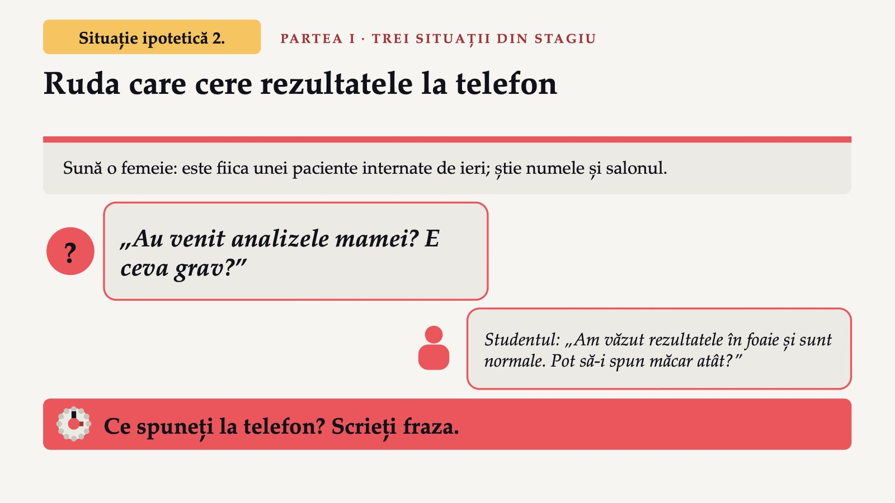
14 / 44Situația este ipotetică, una dintre situațiile standard ale stagiului. Femeia vorbește calm și pare să fie cine spune că este. Scrieți fraza exactă pe care o spuneți la telefon.
pe ce se rezolvă
![Situație ipotetică 2: pe ce se rezolvă PARTEA I · TREI SITUAȚII DIN STAGIU Legea nr. 46/2003: starea pacientului și rezultatele sunt confidențiale (articolul 21); se comunică numai cu consimțământ explicit sau dacă legea o cere expres (articolul 22); rudele află cu acordul pacientului (articolul 10). Formularul din anexa nr. 5 la normele aprobate prin Ordinul nr. 1 410/2016: persoanele pe care pacientul le-a numit în scris Acordul pacientului privind comunicarea datelor medicale personale Subsemnatul, ..../(numele și prenumele pacientului)........., cod numeric personal ...................., îmi exprim acordul ca informațiile despre starea mea de sănătate și datele mele medicale să fie comunicate către persoanele enumerate mai jos, aceasta fiind dorința mea, pe care mi-o exprim în deplină cunoștință de cauză. Numele și prenumele persoanei/ persoanelor indicate de pacient/reprezentant legal Calitatea persoanei (grad de rudenie/altă relație) 1. 2. X ...................... Data ..../..../............. (semnătura pacientului/reprezentantului legal care își exprimă acordul pentru comunicarea datelor medicale personale ale pacientului reprezentat) Desenat după textul anexei nr. 5](diapozitive/C07/015.jpg) 15 / 44
15 / 44Lista din articolul 21 este largă intenționat: nu acoperă doar diagnosticul, ci și starea pacientului, deci și „e bine, doarme”. „Explicit” înseamnă că acordul nu se presupune; „în mod expres” înseamnă că legea trebuie să o spună clar. Acordul pacientului privind persoanele care pot afla starea lui se consemnează în anexa la foaia de observație: acesta este documentul pe care îl căutați când cineva cere informații. Codul de etică extinde secretul și față de aparținători.
Răspunsul apare după ședință
Răspunsul apare după ședință
Fotografia din salon
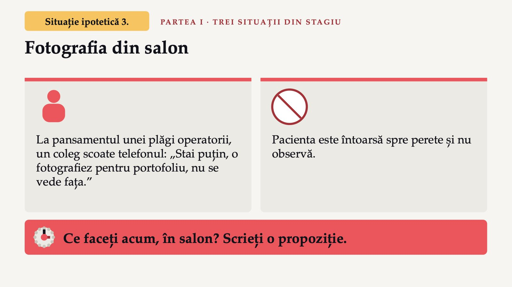
17 / 44Situația este ipotetică, una dintre situațiile standard ale stagiului. Colegul mai spune că nu o pune pe internet și că are nevoie de imagini pentru fișa de lucru.
pe ce se rezolvă
![Situație ipotetică 3: pe ce se rezolvă PARTEA I · TREI SITUAȚII DIN STAGIU Legea nr. 46/2003, articolul 20: „Pacientul nu poate fi fotografiat sau filmat într-o unitate medicală fără consimțământul său, cu excepția cazurilor în care imaginile sunt necesare diagnosticului sau tratamentului și evitării suspectării unei culpe medicale.” Formularul „Acordul pacientului privind filmarea/fotografierea în incinta unității sanitare”, anexa nr. 1 la normele aprobate prin Ordinul nr. 1 410/2016 Acordul pacientului privind filmarea/fotografierea în incinta unității sanitare Subsemnatul, ...../(numele și prenumele pacientului).........., cod numeric personal ........, îmi exprim acordul de a fi filmat/fotografiat în incinta unității medicale în scopuri care le exclud pe cele medicale, aceasta fiind dorința mea, pe care mi-o exprim în deplină cunoștință de cauză. X ...................... Data ..../..../............. (semnătura pacientului care își exprimă acordul pentru filmare/fotografiere) Subsemnatul, ............................................, medicul în grija căruia se află pacientul, sunt de acord ca acesta să fie filmat/fotografiat în incinta unității medicale, acest fapt nefiind de natură a dăuna pacientului. X ...................... Data ..../..../............. (semnătura medicului care îngrijește pacientul) Desenat după textul anexei nr. 1](diapozitive/C07/018.jpg) 18 / 44
18 / 44Formularul se folosește pentru scopuri care le exclud pe cele medicale și se semnează de pacient și de medicul în grija căruia se află. O fotografie „pentru portofoliu” sau „ca să vadă și colega cum arată plaga” nu este o fotografie pentru diagnostic sau tratament. Cu ce aparat se fotografiază stabilește procedura unității; legea nu o spune, iar recomandarea cursului este să nu folosiți telefonul personal.
Răspunsul apare după ședință
Răspunsul apare după ședință
Situațiile voastre
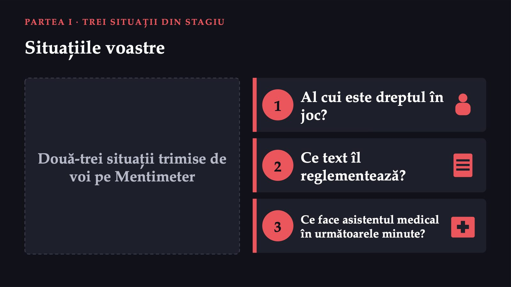
20 / 44Aceste trei întrebări se pun oricărei situații. Dacă le puteți răspunde pentru situațiile din note și pentru cele aduse de colegi, sunteți pregătiți pentru partea de cadru legal a testului. Un lucru nu îl spune clar niciun text citit: cine răspunde și cum, atunci când un student greșește în stagiu. Regula stagiului este că studentul lucrează sub îndrumarea unui asistent medical cu drept de practică și nu face singur acte pe care nu le-a învățat.
O singură greșeală, patru căi (situație ipotetică)
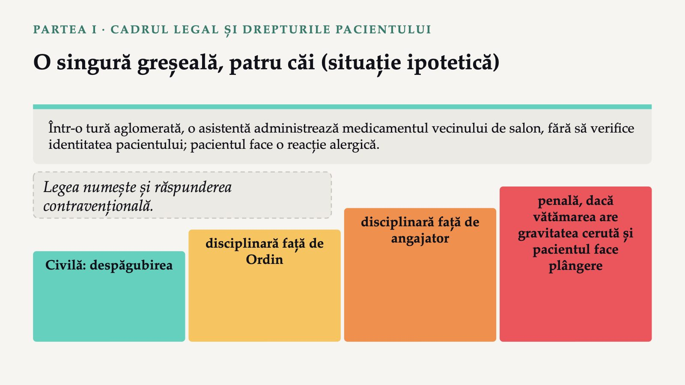
21 / 44Situația este construită pentru curs. Gruparea în patru forme este a cursului, nu a legii, iar textele numesc și răspunderea contravențională. Pe calea civilă, asigurarea acoperă despăgubirea, iar comisia de malpraxis sau instanța stabilește dacă a fost o eroare profesională. Față de angajator, răspunderea decurge din contractul de muncă și din Codul muncii. Cazul de la Craiova, de la lucrarea practică, a arătat cum se combină aceste căi; nu îl reluăm. Analiza din cursul despre siguranța pacientului adaugă o întrebare: de ce a fost posibilă greșeala? Cauzele de sistem nu înlătură răspunderea individuală, dar arată ce trebuie schimbat.
+
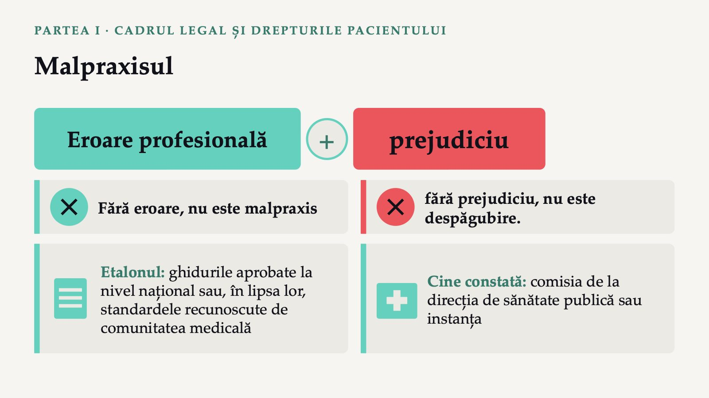
22 / 44Titlul XVI din Legea nr. 95/2006 reglementează răspunderea civilă a personalului medical. Se răspunde pentru eroare, inclusiv prin neglijență, imprudență sau cunoștințe insuficiente, pentru încălcarea confidențialității și a consimțământului, pentru depășirea competenței. Răspunderea este proporțională cu vinovăția, iar personalul nu răspunde pentru ce se datorează condițiilor de lucru sau dotării insuficiente. Ultima regulă de pe ecran face legătura cu ora a doua: a lucra după ghiduri și după dovezi nu este doar o bună practică, este și criteriul după care se judecă o eroare.
?
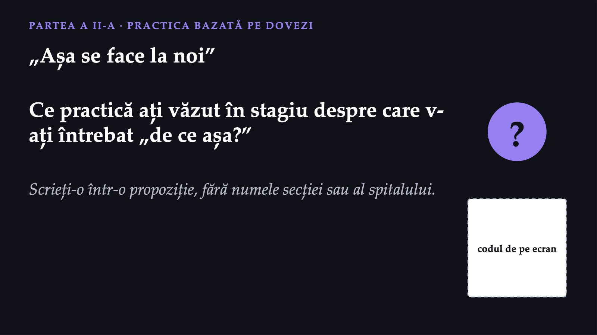
23 / 44În stagiu ați văzut practici care se repetă în fiecare zi, la ore fixe și în același fel. Când ați întrebat de ce, ați primit probabil unul dintre răspunsurile obișnuite: „așa scrie în protocol”, „așa am învățat”, „așa se face la noi”. Ora a doua pornește de la această întrebare și o duce până la capăt: ce spune dovada despre practica pe care ați văzut-o.
Practica bazată pe dovezi
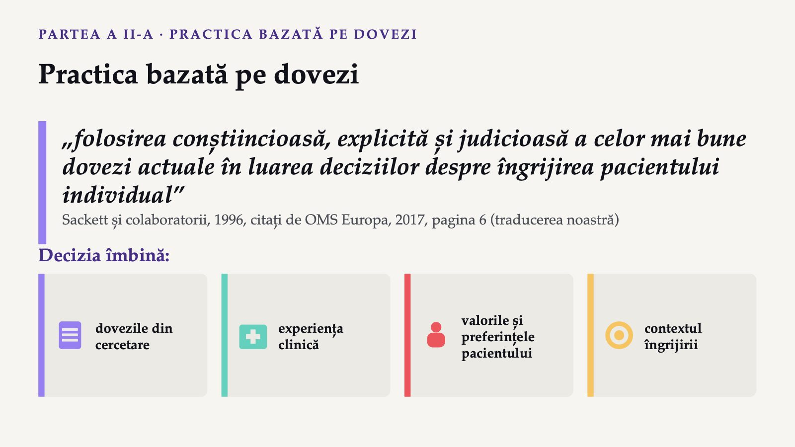
24 / 44Dovada din cercetare este numai unul dintre cele patru aspecte. Un rezultat favorabil nu decide singur pentru un pacient care refuză sau pentru o secție care nu are materialul necesar. Invers, nici obiceiul secției și nici experiența unei asistente cu mulți ani de practică nu țin locul dovezii atunci când dovada există și spune altceva. Legea drepturilor pacientului cere îngrijiri de cea mai înaltă calitate de care societatea dispune, iar ordonanța vă cere o prestație sigură și eficace: practica bazată pe dovezi este felul în care aceste obligații devin gesturi la patul pacientului.
Cateterul schimbat „pentru că i-a venit vremea”
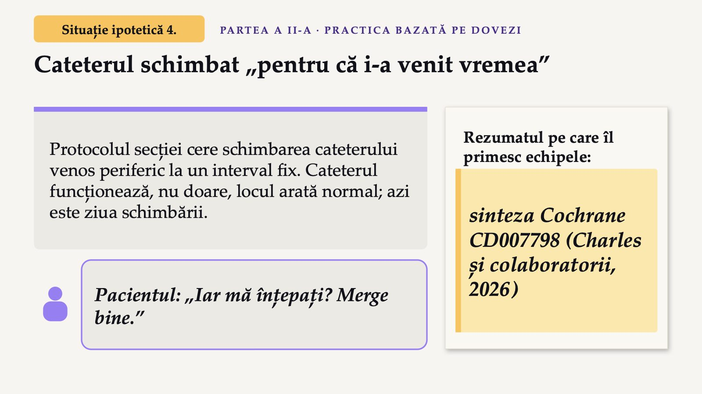
25 / 44Situația este ipotetică, una dintre situațiile standard ale stagiului. Studentul întreabă: trebuie schimbat, dacă totul e în regulă, și ce riscăm dacă îl lăsăm? Pe această situație vedem cum se pune întrebarea.
P
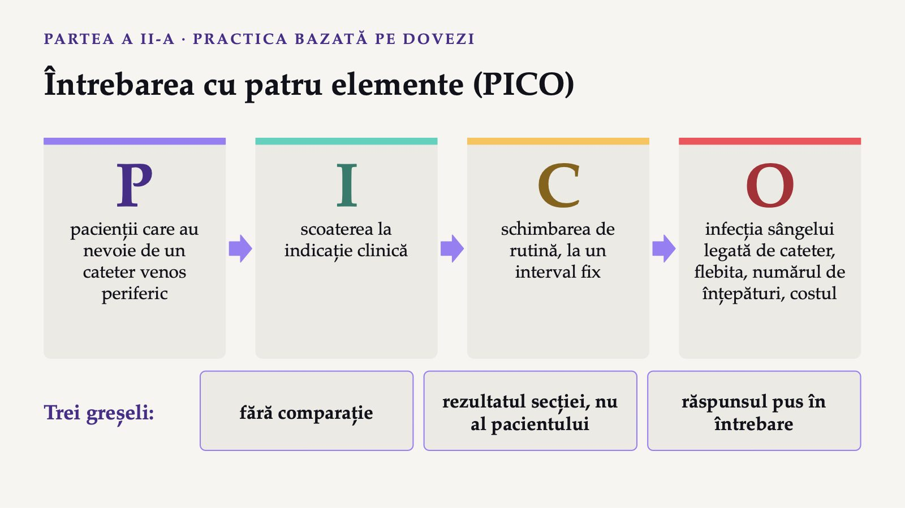
26 / 44Manualul Cochrane arată că o sinteză se definește prin populație, intervenții, comparații și rezultate; acronimul PICO, din inițialele englezești, ajută la reamintirea lor. Întrebarea completă devine: la pacienții care au nevoie de un cateter venos periferic, scoaterea lui la indicație clinică, față de schimbarea de rutină, modifică riscul de infecție sau de flebită și numărul de cateterizări? O întrebare fără comparație nu are răspuns, pentru că orice practică este bună sau rea față de altceva. O întrebare bine pusă este neutră: lasă loc ambelor răspunsuri.
Cât de sigură este dovada
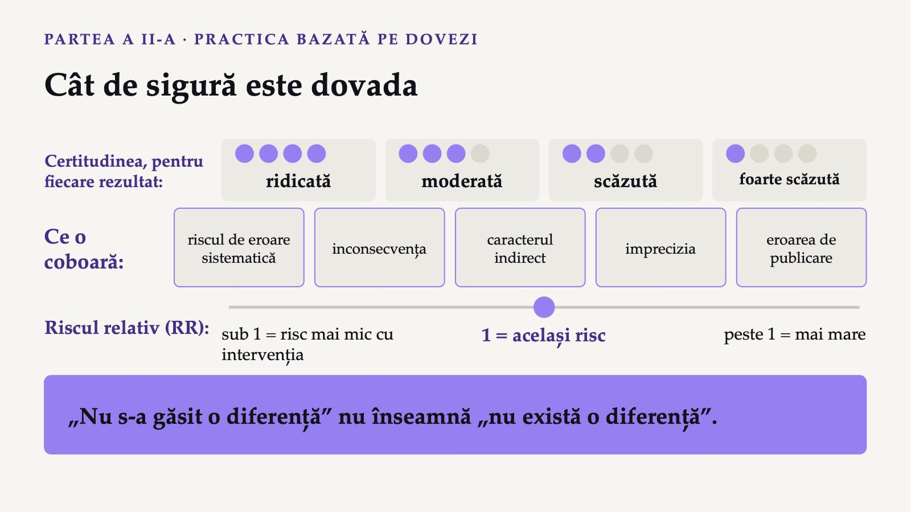
27 / 44Cochrane folosește sistemul GRADE, care judecă certitudinea separat pentru fiecare rezultat. Studiile randomizate pornesc de la certitudine ridicată, cele nerandomizate de la certitudine scăzută; de acolo, certitudinea coboară pentru fiecare problemă găsită. Tipul de studiu, singur, nu spune cât de sigură este dovada. Lângă riscul relativ stă intervalul de încredere de 95%: un interval larg înseamnă o estimare imprecisă, iar un interval care cuprinde valori de o parte și de alta a lui 1 arată că datele nu exclud nici un risc mai mic, nici unul mai mare.
Ce este o sinteză sistematică
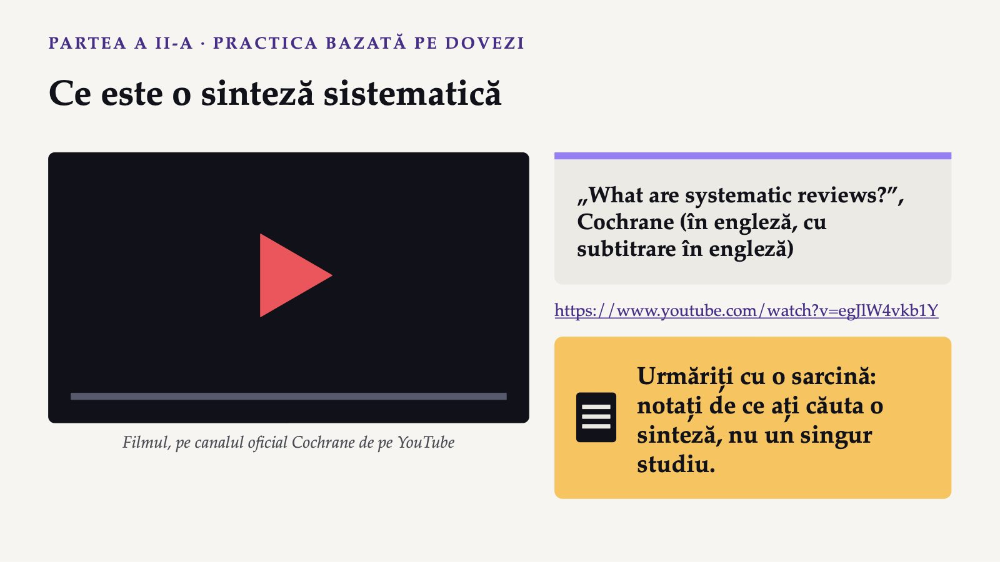
28 / 44Înainte să citiți rezumatul, urmăriți un film scurt al organizației Cochrane despre ce este o sinteză sistematică. Pentru voi, concluzia este liniștitoare: nu trebuie să citiți singuri zeci de studii; trebuie să știți să găsiți o sinteză sau un ghid, să citiți concluzia și certitudinea și să duceți întrebarea acolo unde se ia decizia.
Lucru pe echipe · 45 de minute
![PARTEA A II-A · LUCRUL PE ECHIPE Lucru pe echipe · 45 de minute 1. Scrieți practica într-o propoziție, așa cum ați văzut-o aplicată. 2. Transformați-o într-o întrebare cu patru elemente: pacienții, practica, ce o înlocuiește, rezultatul care contează pentru pacient. 3. Citiți rezumatul sintezei Cochrane primite: concluzia autorilor și certitudinea dovezii. 4. Decideți: practica rămâne, se schimbă sau sinteza nu permite o decizie. 5. Motivați în trei rânduri: ce spune sinteza, cât de sigură este dovada, ce ar trebui să se întâmple în secție și cine decide. Fără numele secției, al spitalului sau al colegilor.](diapozitive/C07/029.jpg) 29 / 44
29 / 44Fiecare echipă alege o practică văzută în stagiu, una despre care s-a întrebat măcar o dată „de ce așa?”. Fiecare echipă primește rezumatul uneia dintre cele patru sinteze Cochrane; alegeți practica din stagiu cea mai apropiată de el. Produsul echipei are cinci rânduri: practica, întrebarea, ce spune sinteza, decizia, motivarea.
Repoziționarea de noapte
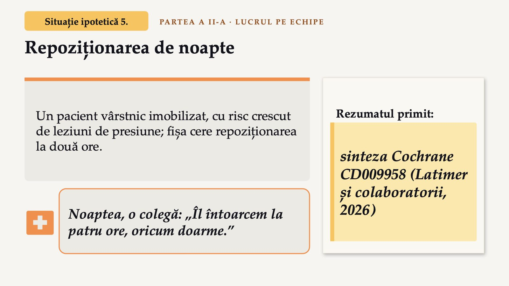
30 / 44Situația este ipotetică. Studentul întreabă dacă contează că pacientul este întors la două sau la patru ore, pentru că o colegă spune că este același lucru.
Plaga și apa de la robinet
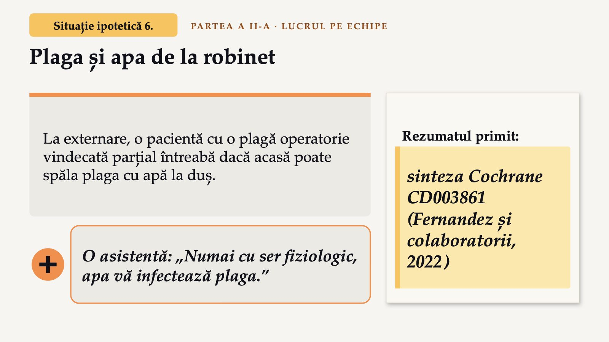
31 / 44Situația este ipotetică. Studentul a citit undeva că apa de la robinet este la fel de bună și întreabă dacă așa este.
?
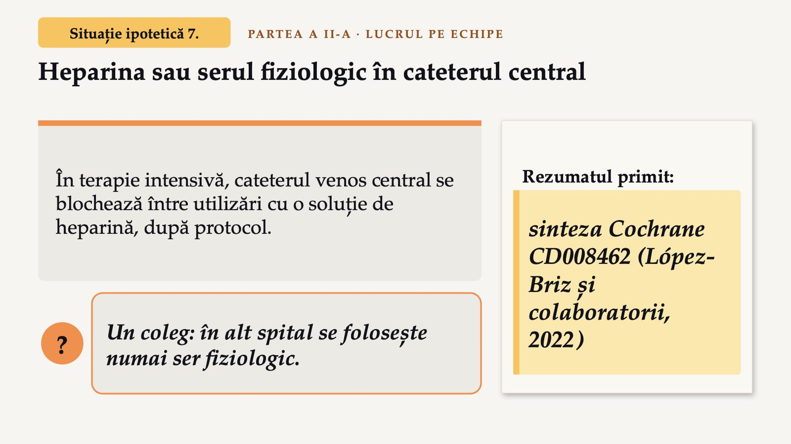
32 / 44Situația este ipotetică. Studentul întreabă care variantă este corectă și dacă poate folosi ser când nu găsește heparina.
45 de minute
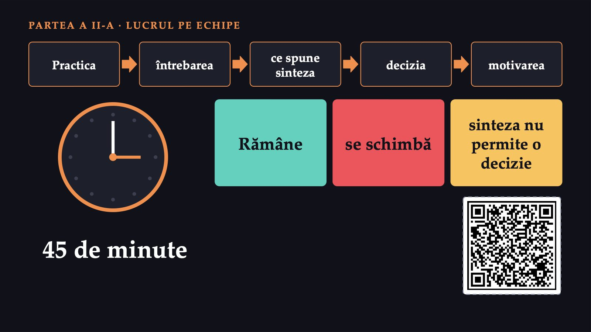
33 / 44Lucrați acum. Citiți întâi concluzia autorilor și certitudinea, apoi efectul. La sfârșit, fiecare echipă are cinci rânduri.
Ce au decis echipele
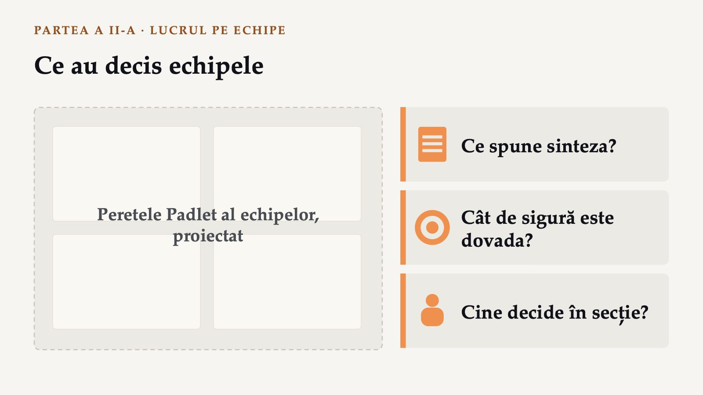
34 / 44Uitați-vă la motivări, nu numai la decizie. Două echipe cu același rezumat pot ajunge la aceeași decizie din motive diferite; motivul contează pentru cine decide în secție. Practica secției se schimbă prin organizație, prin cei care răspund de procedură, nu de un singur om.
Răspunsul apare după ședință
Răspunsul apare după ședință
Răspunsul apare după ședință
Răspunsul apare după ședință
Răspunsul apare după ședință
Răspunsul apare după ședință
Răspunsul apare după ședință
Răspunsul apare după ședință
De ce o practică nu se schimbă singură
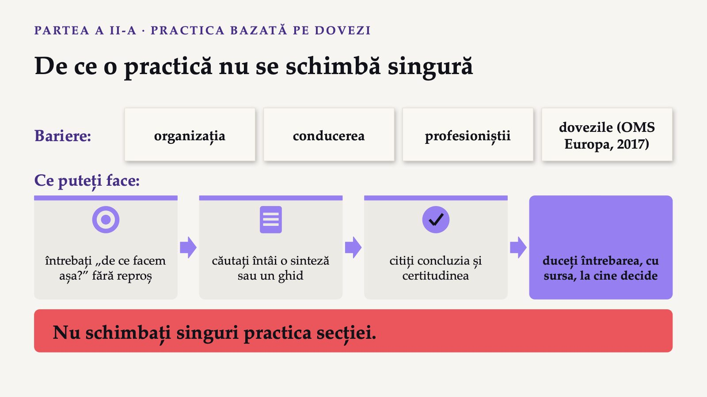
39 / 44Între barierele organizației, documentul OMS Europa numește rutinele depășite și nepuse niciodată în discuție: exact punctul de plecare al orei a doua. O revizuire sistematică a 20 de articole publicate între 1996 și iulie 2018, despre asistentele medicale din comunitate, a găsit atitudini pozitive față de practica bazată pe dovezi, dar cunoștințe insuficiente; barierele principale au fost lipsa timpului și a resurselor, iar pregătirea academică a fost printre facilitatorii cei mai citați. Revizuirea nu cuprinde date despre România. Exercițiul de azi face parte din ce va face posibilă schimbarea mai târziu.
Firul disciplinei
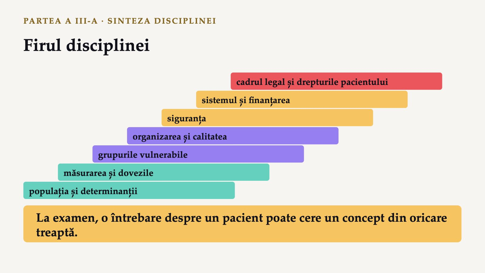
40 / 44Disciplina a pornit de la populație și a ajuns la pacientul pe care îl îngrijiți și la drepturile lui. Legea spune ce aveți dreptul să faceți și ce datorați pacientului, dovada spune ce merită făcut. Firul are și o lectură juridică: siguranța pacientului și analiza erorilor sunt fața preventivă a aceleiași preocupări pe care răspunderea pentru malpraxis o tratează după ce prejudiciul s-a produs.
Provocările profesiei: ce spun datele
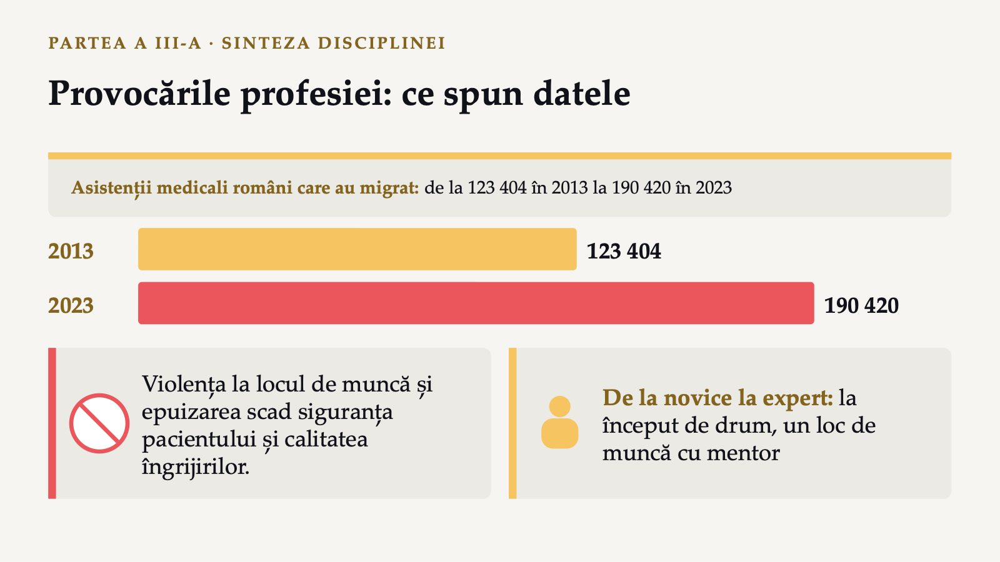
41 / 44Cifra migrației vine din profilul sistemului de sănătate al României realizat de Observatorul European; pentru secții, ea înseamnă ture cu mai puțin personal. Raportul OMS despre asistența medicală în lume estimează pentru 2023 un deficit de 5,8 milioane de asistenți medicali, care ar scădea la 4,1 milioane în 2030. După modelul Patriciei Benner, prezentat printr-o revizuire din 2026, expertiza evoluează în cinci stadii, iar formarea continuă și mentorii o susțin. Un începător lăsat singur cu responsabilități de expert este o problemă de siguranță a pacientului, nu o dovadă de încredere.
Examenul și portofoliul
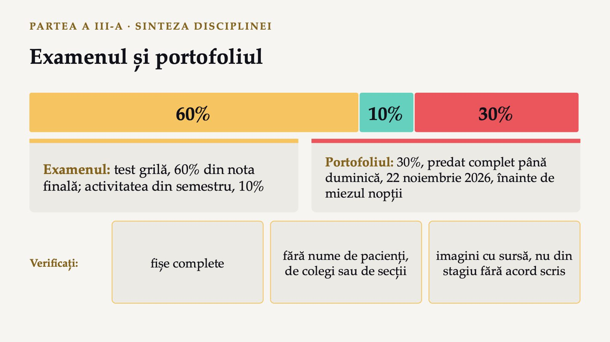
42 / 44Pentru a promova, trebuie îndeplinite cumulativ mai multe condiții, între care nota minimă 5 la evaluarea teoretică și prezența de 100% la lucrările practice. Întrebările pornesc de la situații din practică. Când două variante par corecte, alegeți-o pe cea care respectă dreptul pacientului și limitele profesiei: variantele greșite sunt de obicei gesturi bine intenționate care trec peste acordul pacientului sau peste competența asistentului medical.
?
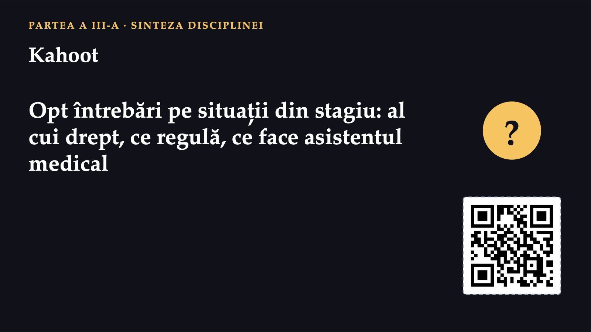
43 / 44Încheiem cu opt întrebări pe situațiile de azi. Contează raționamentul, nu numerele de articole.
?
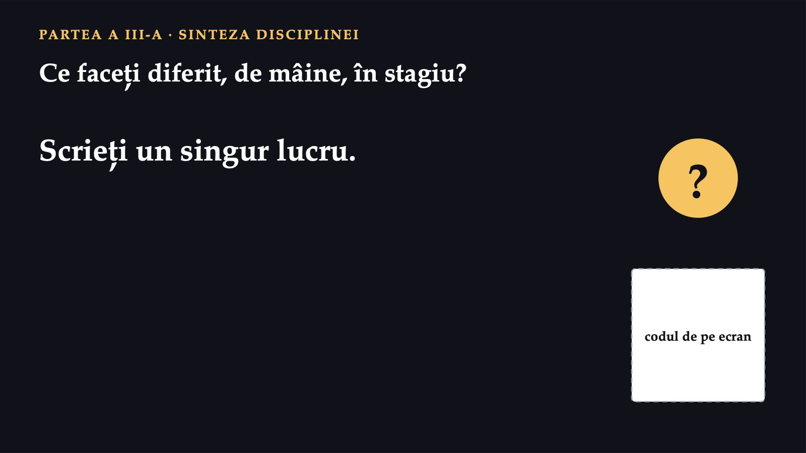
44 / 44De mâine: vă prezentați ca student la fiecare pacient și acceptați refuzul; nu spuneți la telefon nimic despre starea unui pacient; nu fotografiați fără acord scris; nu discutați pacienți pe hol sau în grupuri de mesagerie; când vedeți o practică aplicată „pentru că așa se face”, căutați o sinteză și duceți întrebarea, cu sursa, la cine decide. Vă mulțumim.
Săgeți sau spațiu: navigare · O: vedere de ansamblu · N: notele prezentatorului · F: ecran complet · Esc: închidere